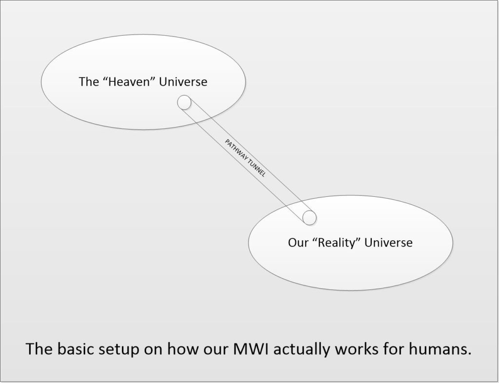
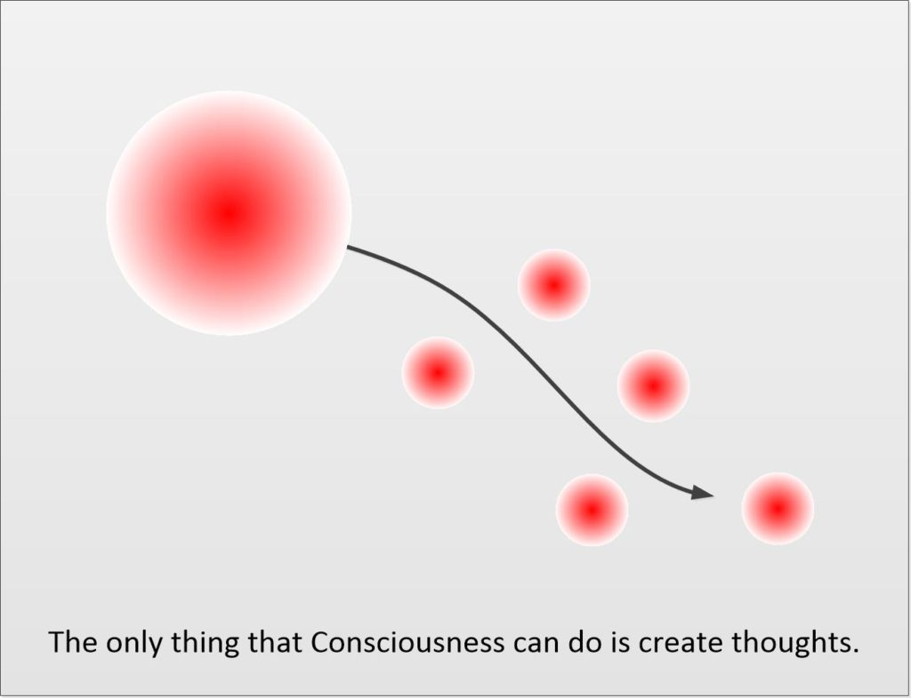
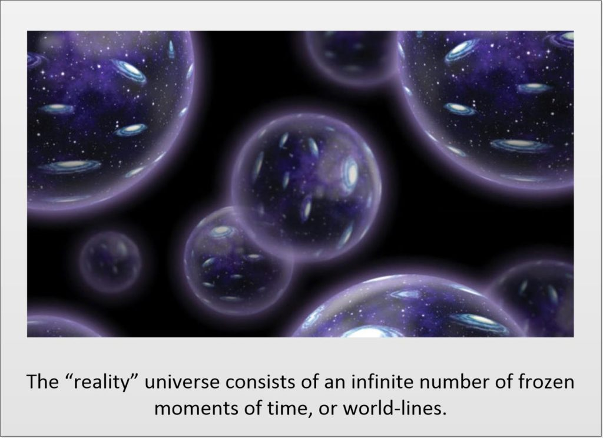
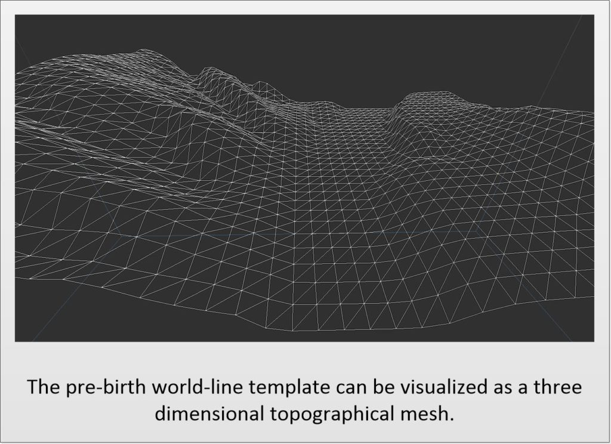
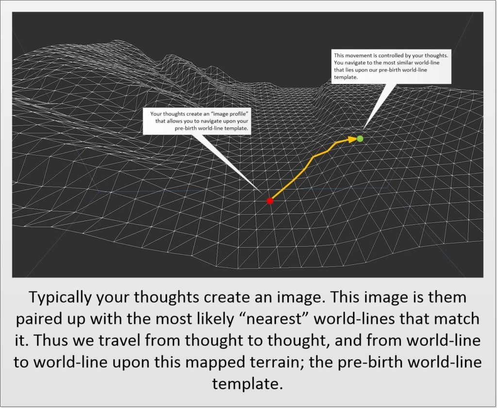
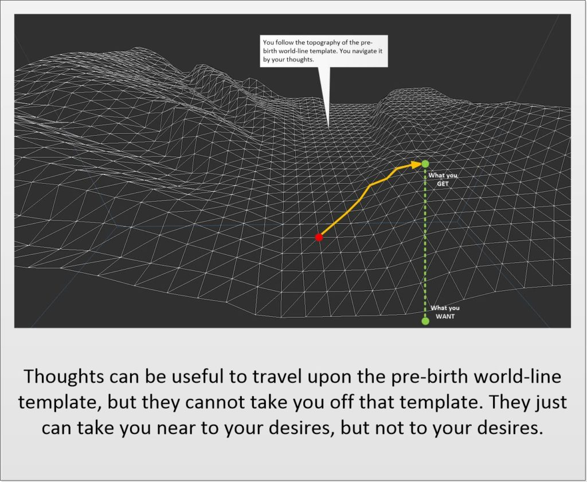
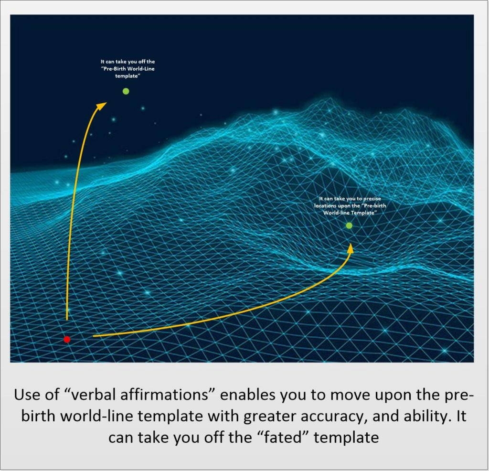
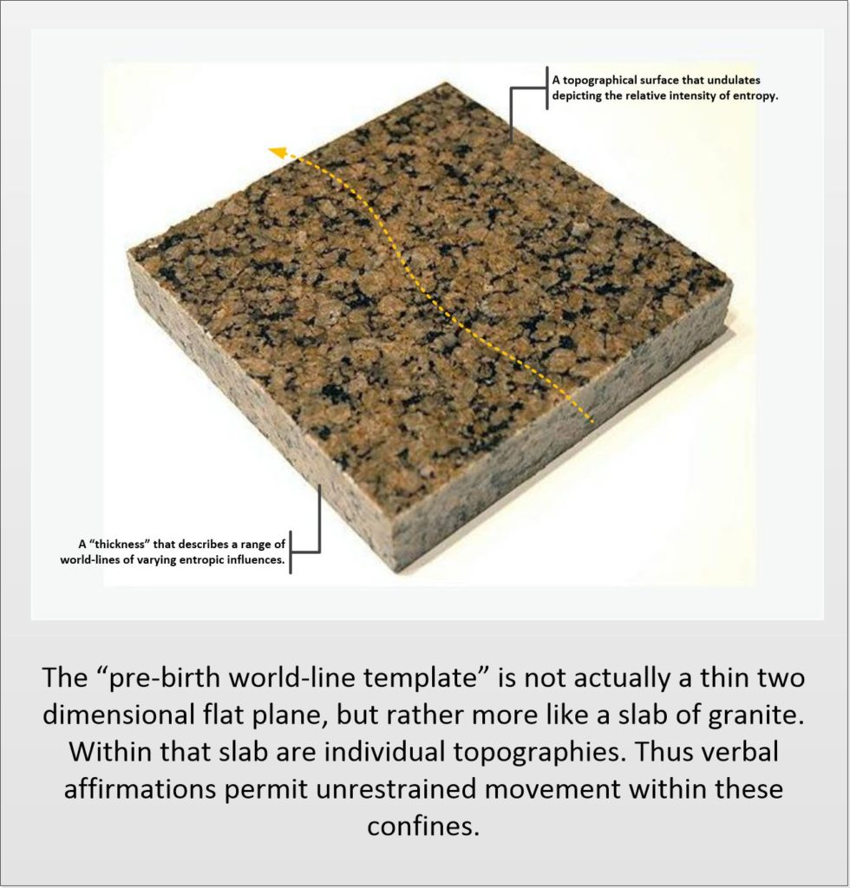
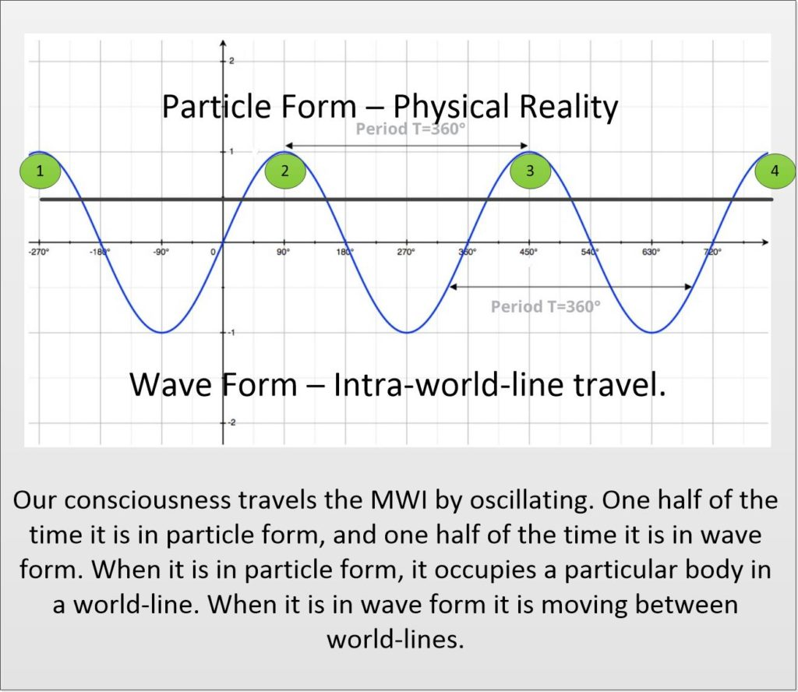

This article is part of my prayer / intention campaign sub-index. In it we discuss how you can change your life by your thoughts. And, in this particular article, we look at the mechanism(s) involved. We look at just how a consciousness is able to navigate. This is a rather deep conversation, and certainly more involved than what I have been saying in the past. That “thoughts create reality“. Here we talk about how and why it works that way.
It all began with a simple question;
...Another thing I noticed and perhaps this is of value to my fellow MM. Six months ago when starting my first prayer campaign MM style I started to feel tired of praying after about 3 weeks already. And my former prayer style was just as long So it wasn't the change in style. Just tired after years of relentless prayer I guess. As a result my other 2 campaigns I still go through all my rituals and prayers but as a robot So to speak. So much less intensity in the words. Yet I have seen lots of things manifesting. It seems one can go through prayers by just saying them out loud even when you don't feel like it much sometimes. Is that the case? And if so, how come just talking to other people when saying you are gonna do things doesn't cause that to happen. Whats the technical difference. Or has my brain been primed by my previous years of prayer? Would love your take on it MM and some readers too I think.
The point here is the basic question;
If thoughts change the reality, why does vocalizing them out loud appear to have an effect, when thinking about them in silence doesn't?
And we will answer it here.
You Must vocalize or write down your thoughts.
You just cannot think things and expect them to happen.
Yes. I know. I know. I have repeatedly stated that what you think causes your desires to manifest. And yes, that is the general outline of how it works, but that is not the “operation manual”. You need to perform a physical action regarding those thoughts to use them to navigate.
You must either [1] vocalize or [2] write the thoughts down. You must do something physically to connect the thoughts to your reality. Other techniques might include the display of pictures that you can view while you are thinking about things. You need a physical connection.
Otherwise NOTHING will happen.
Thoughts alone will not cause things to happen. Wishing for things to happen will not make them happen. Worrying about things will not cause them to manifest. You MUST do something physically.
You must do something physically
It has been my experience that if you write things down in a list, and then read them out verbally (not silently), the system will work.
You can also use rituals, create talismans, generate electronic mechanisms that operate in the physical to generate physical navigation movements.
You can create a “vision board”. The creation of the vision board will have the same effect as reading a verbal affirmation. And the viewing of the board, will contribute to that effect. (The contribution magnitude will be lesser than the actual creation of the board.) So viewing a vision board isn’t as effective as creating one.
Recommendation for best results
I recommend that [1] you generate a list of affirmations, and [2] that you read them out loud in a campaign, that [3] consists of an on/off cycle for the best effects.
The pre-birth world-line template
The most important thing that you must understand is that our consciousness is foreign to this universe.
Our consciousness did not evolve in THIS universe. It evolved in a different universe. Thus it is alien. It doesn't fit here. This universe is something that the consciousness USES for it's own purposes.
I know that that opens up a ton-load of questions. Answers to that and their implications are “above my pay grade”, but I do have some thoughts. I can cover them later on if you wish.
Our consciousness comes from soul.
Soul creates a smaller part of itself. This part is known as "consciousness" and it is used to travel outside of the "Heaven" universe.
Again. The “soul” does not exist here; in this (apparent) universe. The soul occupies an entirely separate universe. One which I refer to as “The Heaven Universe”.

The Soul creates a consciousness.
It ejects that consciousness into a “transport tube”; a kind of tunnel.
This tunnel is a mechanism for the consciousness to move from one universe to another.
Then the consciousness arrives in the “reality” universe.
Being foreign, there is really nothing that our consciousness is able to do in this “reality” universe. It is like water and oil. They just do not interact together well.
The only thing that our consciousness is able to do is generate thoughts. That is it.
Like a sun generates light, or how a flame creates sparks. The consciousness is able to create the same kinds of "stuff" that it is comprised of. This is what thoughts are. Thoughts are a form of the same kind of constructions as one's consciousness is.

And this reality universe (as I like to call it), consists of a near infinite number of fixed world-lines.
The "Heaven" universe is completely different from the "reality" universe. In fact, it is almost like the "reality" universe is an "artificial" construct of some type. The "reality" universe consists of an infinite number of static moments in time, or what I call "world-lines".

All that our soul can do, is inject our consciousness into a body. Then, once the consciousness is there, the thoughts that the consciousness has navigates to the next world-line based on the highest-probability occurrence. This highest-probability of occurrence is a pre-established vector that the consciousness follows independent of thought.
We call this the “world-line pre-birth template”.
It is the fated direction that your life will unfold towards as your consciousness rides the physical body life-time. It is critically important in what your life will present to you to experience. (At least that is what your very own soul expects.)

You could be an infant, brain-dead in a vegetative state, or mind dulled by drugs and abuse, but the vector path of the life that you will live will be following the pre-mapped out “pre-birth world-line template”. It is the system that your soul establishes for your consciousness. It is the way for your consciousness to obtain experiences.
How to navigate the world-lines
Well, thoughts are the ONLY thing that the consciousness can create.
And thoughts act like a magnet to the most similar world-lines. The thoughts form a “shape” or better yet, a “profile” that surrounds the consciousness. And the consciousness automatically moves towards the world-lines that match that profile.

This is a basic activity that describes MOVEMENT UPON the pre-birth world-line template.
But it does not describe movement off the pre-birth world-line template. That requires a different mechanism for movement. (A similar mechanism, but fundamentally different.)
So thoughts alone, without any further actions, can navigate upon the pre-birth world-line template. It is what is known as a “fated life”.
So if you rely on your thoughts alone to navigate, you will find that your life seems to be “fated”. That you might wish and yearn for things, but they never materialize. You might think about that nice guy or gal at the coffeehouse, but nothing will really manifest. Your life will just follow your pre-mapped out life.
Your thoughts might move you close to certain areas, but it won’t take you to where you want to go.

Movement off the Pre-Birth World-line Template
If this situation describes you…
That you think, wish and dream for things, but they never materialize. It seems that your life is fated to some degree.
Then, you are “trapped” following the pre-birth world-line template.
If you do not want to follow the fated life that has been provided to you, then you will need to incorporate additional measures to navigate the MWI. You will need to navigate off the pre-birth world-line template.
There are two main techniques to do so.
- Verbal Affirmations
- Slides
Quick recap
There are three techniques in total.
- Thoughts alone (dreams, wishes, desires, plans and obsessions).
- Verbal affirmations (Written goals, and verbalizing them aloud.)
- Slides.
Let’s talk about the systems that take you off your “fated life”…
Verbal Affirmations
You must physically say, write down, or illustrate your dreams and wishes and desires to navigate using this method. This connection; between thoughts and action is the most fundamental way that you can move upon your pre-birth world-line template.
- You can move upon the “fated” pre-birth world-line template.
- You can move “nearby” to your targets that might lie off the pre-birth world-line template, but are not that too “far distant”.

Now in illustration, for illustration and descriptive purposes, I have illustrated the pre-birth world-line template as a “flat sheet” showing a matrix of world-lines connected by highest probability routes. In reality, it’s not really flat. It actually looks like a thick slab. And the world-lines that lie upon this sheet actually are (instead) embedded within this slab.
So movement, most movement, whether directed by thoughts alone, or by verbal affirmations will lie within the “pre-birth world-line template” slab.

To move about off the pre-defined vector path (as defined by the pre-birth world-line template) you need to navigate further than what the (default) pre-birth world-line template allows.
That requires actual physical activity, or physically associated thoughts.
You see, our consciousness moves in a cyclic fashion following a sine curve. One half the time it is in wave form, in which is it moving from world-line to world-line. The other half of the time it is in particle form where it occupies the physical body.

- It is ONLY when it is in wave form that the consciousness can physically move within the MWI.
- It is ONLY when it is in particle form that the consciousness can control the navigation.
So, [1] to navigate you need a starting world-line; the one that you occupy at that moment. Thus your consciousness is in particle form. [2] Your consciousness can only generate thoughts when it is in wave form. So your thoughts are basically generated entering and leaving a reality.
In Wave Form... You generate thoughts. You move on the MWI. In Particle form... You occupy a world-line. You navigate to the next world line.
Combined together, the ONLY way to effective navigate through the MWI off the pre-birth world-line template, (or to extreme points upon the pre-birth world-line template), you must do so by directing while in particle form.
Thoughts alone. You move and navigate at the same time. You can only do this upon a Pre-Birth World-Line Template. Verbal Affirmations. You do this while in particle form, upon a world-line. You program the physical reality by your actions.
Thus, thoughts (in wave form) cannot alter your course vector substantively. Only your actions while in particle form can.
In short, when you are in the physical form, you are operating the levers that control the body via quantum particle forms. You MUST perform physical actions to navigate. This usually means thinking while you are doing something physical. Thus reading affirmations out loud.
Now, let’s talk about making REAL and SUBSTANTIVE changes to your life…
Performing a “Slide”
A “slide” is a complete movement off and outside of the pre-birth world-line template. And what defines it from the “verbal affirmations” are two primary characteristics.
- You navigate in a similar fashion to “verbal affirmations” AND…
- You establish a completely new world-line template terrain geometry.
This new world-line template replaces your pre-birth world-line template.
The smart MWI traveler would define the new world-line template that he/she would travel upon. And he/she would make sure and provide safeguards to guarantee that accidental world-line template geometry wouldn’t be accidentally created.
How to generate a replacement template to travel upon
It’s actually rather simple.
The “devil is in the details”.
Or, in other words, you must verbally create the new replacement world-line template that you will follow. But of course, there are many unknowns doing this. You might think that you are creating one new reality for yourself by constructing the template, only to discover that you have “created a monster” and other unexpected events, and consequences have cropped up and appeared “out of the blue”.
Let’s use the following as an example…
You live a nice, but boring life. You have a small pizza business in a small town. You are pretty happy doing it, but you hear and read about how everyone else is getting rich investing in the stock-market and in bit-coin. So you decide to completely replace your pre-birth world-line template with a template of your own design. You perform your normal verbal affirmation campaigns, but you specifically state that you have slid off the pre-birth world-line template and on to a a new template of your own geometry. You describe the new template as a life of wealth as a big important businessman, with factories making frozen pizza that everyone loves. You describe your rich cars, fancy mansion and tons of money in the bank. What you fail to realize that these possessions, when they manifest, all come with other attachments and events. many of which you do not like at all. Such as a divorce, arrest for tax evasion, and medical problems. And while you might try to alter the manifestation of these side effects, many cannot be helped.
You see, the illusion that a 20-something beauty queen can be a world famous scientist, knows kung-fu, and live in a mansion is just Hollywood nonsense. The real world does not work that way. Do not try to replicate that fantasy. It will not work the way you intend.
There are numerous techniques and methods to slide off your pre-birth world-line template. This is just an overview. Keep in mind that I would advise careful thought be given to this decision. Any slide, no matter how well intentioned, WILL come with unanticipated consequences.
Conclusion
You must verbalize and write down your verbal affirmations for them to work. Thoughts alone are ineffective in world-line navigation. As I have stated in my answer to the above question…
The act of talking involves a wide range of activities. More than just thinking. Consider thinking about eating Lasagna. Now, I love the stuff, but it’s very difficult to get in China. I’d have to make it myself or have my wife order the ingredients, learn how to make it, and then present it to me as a meal. Yet, I find myself thinking about this luscious dish often. Yet is doesn’t appear. Why? Consider worrying about paying a bill. And you worry and worry how you are going to come up with the money. You think about strategies, and your mind goes off in all sorts of tangents related to the debt that just sits there festering. Yet nothing is resolved. Why? Thoughts alone are not associated with the physical reality. They are just creations of your consciousness, and the only… the ONLY exposure those thoughts have with anyone or anything else is the consciousness that generated them. That’s it. But, if you connect those thoughts to the reality that you inhabit, they leave the wave form, and enter the particle form. That is how thoughts are able to influence the physical. They are created by the consciousness, and transmuted into a form that the reality can accept. The techniques for this to occur include speech, sounds, writing, actions, etc. Physical activity must occur to connect the thoughts to the reality that you inhabit. Thus worrying and fretting but not speaking, or writing about it results in no effect. Nothing happens. But if you speak about the worries (in such a way that they are resolved) the solution and navigation within the reality that you navigate manifests. YOU MUST WRITE and/or SPEAK thoughts out for them to manifest within your reality.
Sanity Check
This is easy enough to check.
Generate two sets of affirmations.
- One set you read aloud and read what you have written down on paper.
- The next second set is a picture that you will look at and think about what you want.
Watch and record which thoughts manifest sooner.
I hope that I was able to clarify some key points and added some understand on how the mechanism actually works. There will be more posts and articles on this in the future, as there will probably be many more questions generated by this discussion.